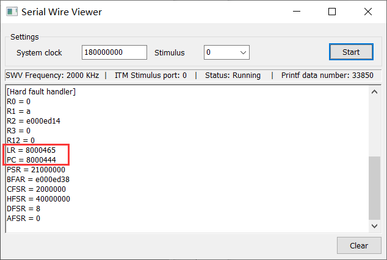
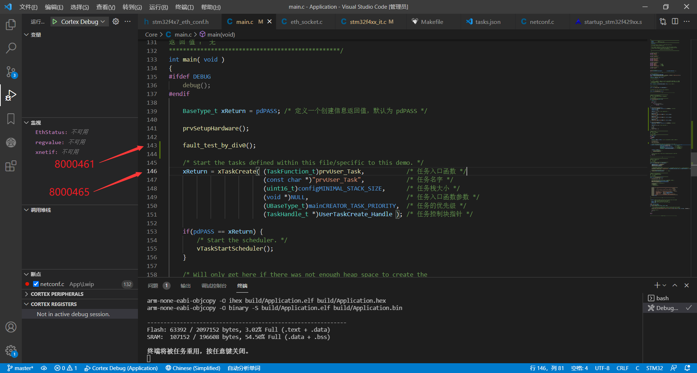
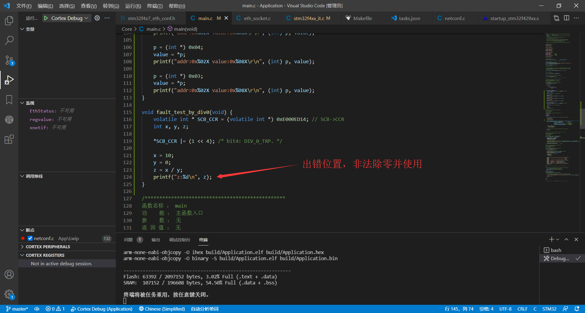
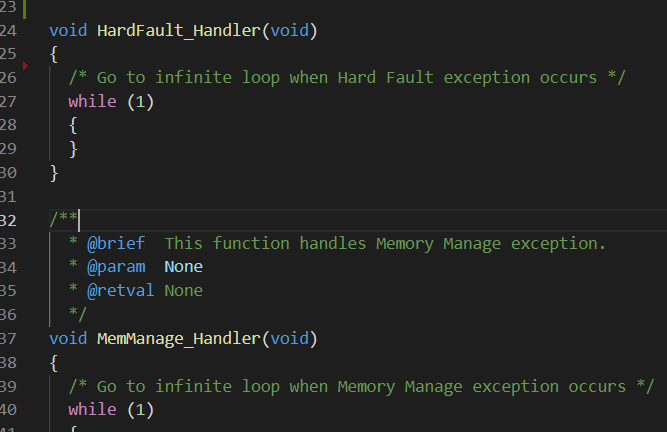
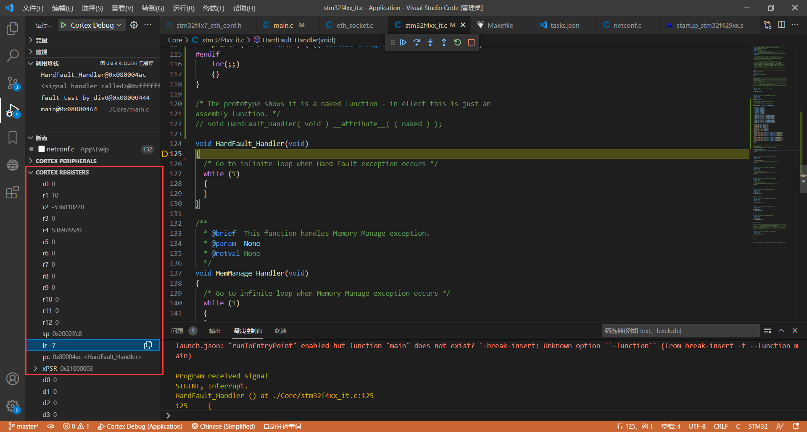
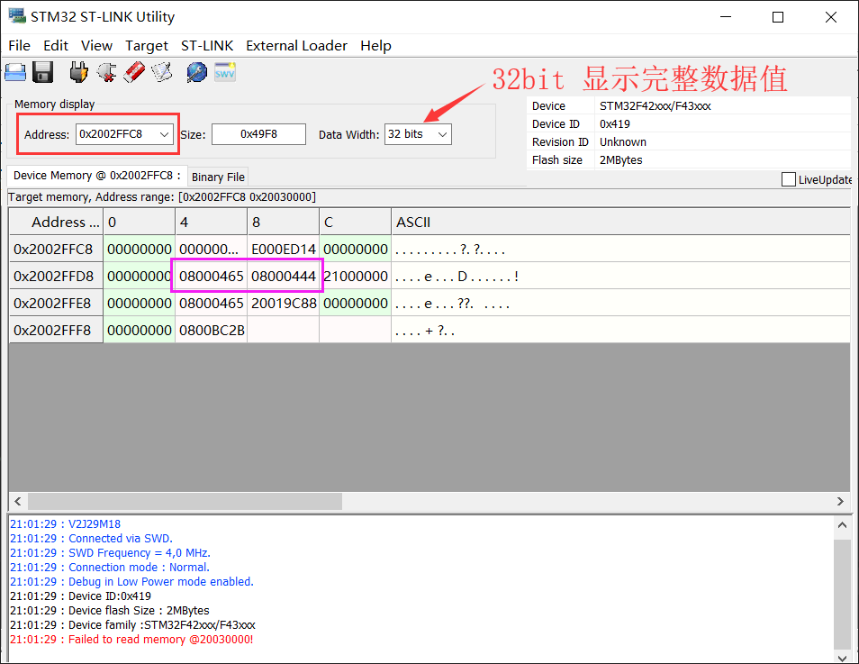
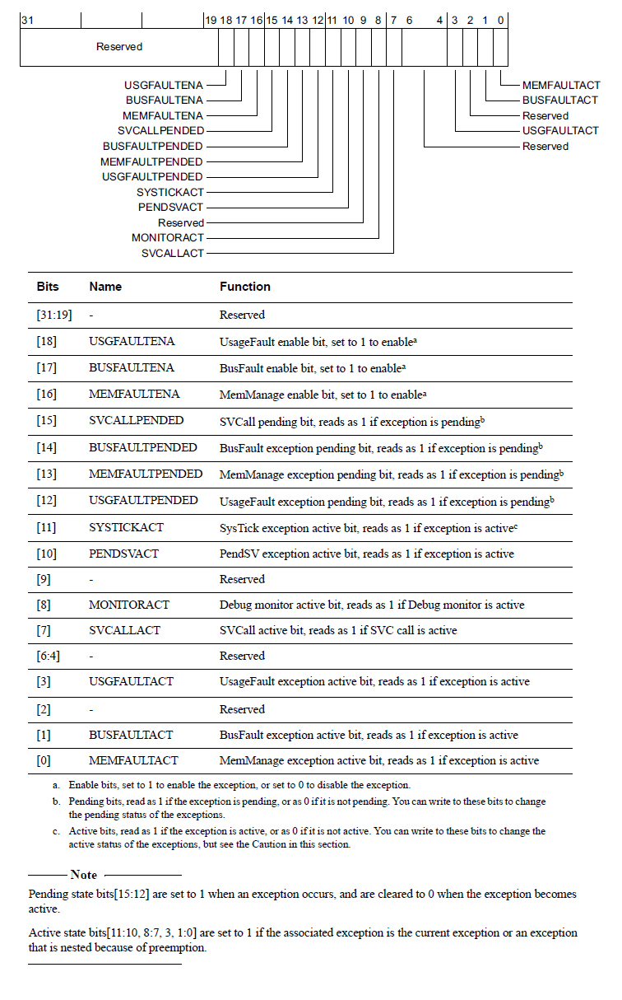

在程序开发阶段，少不了 Debug 调试，除去编程架构搭建不稳定所造成的错误外，大部分会出现或多或少的故障异常，而这些异常有可能是粗心或者对编程了解不到位所导致的 ‘ 堆栈溢出 ’ 、‘ 数组下标越界 ’ 、‘ 数学运算异常 ’ 等等；而本篇则主要以常见的进入 Hardfault 中断来进行分析错误来源。
# ARM Cortex-M 核心
ARM 架构，过去称作高级精简指令集机器（英语：Advanced RISC Machine，更早称作艾康精简指令集机器，Acorn RISC Machine），是一个精简指令集（RISC）处理器架构家族，其广泛地使用在许多嵌入式系统设计。
而对于 ARM Cortex-M 是 ARM 架构处理器核心中，低阶系列的统称，由安谋控股所授权。这组核心的特点为低成本以及高能源效率的微处理器而优化设计，已有上千万个消费性设备中有此系列的微处理器。此系列核心包括 Cortex-M0、Cortex-M0+、Cortex-M1、Cortex-M3、Cortex-M4、Cortex-M7、Cortex-M23、Cortex-M33、Cortex-M35P 和 Cortex-M55。其中 Cortex-M4 / M7 / M33 / M35P / M55 核心有浮点运算器的选项，若有浮点运算器的选项，会在型号后面说明，例如 Cortex-Mx with FPU 或 Cortex-MxF，其中 x 是核心编号。
如标题所述，其中 Cortex-M3/M4/M7 同属 ARMv7-M 架构，再细分一点，Cortex-M3 实现的是 ARMv7-M 架构，Cortex-M4 /Cortex-M7 实现的是 ARMv7E-M 架构。
# ARMv7-M 和 ARMv7E-M 架构区别
如果有玩过过 Cortex-M3 系列的芯片跟 Cortex-M4/M7 的芯片，或多或少都知道 Cortex-M4/M7 比 Cortex-M3 多了 DSP 跟硬件浮点运算，以下是 ARMv7E-M 架构的拓展功能介绍：

由于 ARMv7E-M 是 ARMv7-M 的一个拓展子集，所以以下统称 ARMv7-M 为 “ARMv7-M” 和 “ ARMv7E-M ” 的集合。
# ARM 寄存器

# 通用寄存器（R0 - R12）
R0-R7 被称为低组寄存器。所有指令都能访问它们。它们的字长全是 32 位，复位后的初始值是不可预料的。
R8-R12 被称为高组寄存器。这是因为只有很少的 16 位 Thumb 指令能访问它们，32 位的 thumb-2 指令则不受限制。它们也是 32 位字长，且复位后的初始值是不可预料的。
# 堆栈指针寄存器（SP）
在 ARMv7-M 架构中，共有两个堆栈指针 SP_main 和 SP_process ，有时候也会把这个堆栈指针寄存器称为 R13。
- 主堆栈指针（MSP），或写作
SP_main。这是缺省的堆栈指针，它由 OS 内核、异常服务例程以及所有需要特权访问的应用程序代码来使用。 - 进程堆栈指针（PSP），或写作
SP_process。用于常规的应用程序代码（不处于异常服用例程中时）。
# 链接寄存器（LR）
链接寄存器（LR） 主要用于在调用子程序时存储返回地址；有时候也会把这个链接寄存器称为 R14。
# 程序计数器（PC）
程序计数器作为 PC（或称为 R15）访问，它根据所执行指令的大小（在 ARM 状态下始终为 4 个字节）递增；并通过分支指令将目标地址加载到 PC 中。 您还可以使用数据处理指令直接加载 PC。
Note： 寄存器 R0-R12、SP、LR 和 PC 被称为 Arm 核心寄存器。这些寄存器可以描述为 R0-R15。更详细的说明可以看《ARMv7-M Architecture Reference Manual》B1.4 章 Registers 部分
# 异常定义
# 异常类型

# 异常更新
在入栈和取向量操作完成之后，执行服务例程之前，需要更新一系列的寄存器：
- SP：在入栈后会把堆栈指针（PSP 或 MSP）更新到新的位置。在执行服务例程时，将由 MSP 负责对堆栈的访问。
- PSR：更新 IPSR 位段（地处 PSR 的最低部分）的值为新响应的异常编号。
- PC：在取向量完成后，PC 将指向服务例程的入口地址，
- LR：在出入 ISR 的时候，LR 的值将得到重新的诠释，这种特殊的值称为 “EXC_RETURN”，在异常进入时由系统计算并赋给 LR，并在异常返回时使用它。EXC_RETURN 的二进制值除了最低 4 位外全为 1，而其最低 4 位则有另外的含义。
以上是在响应异常时核心寄存器的变化。另一方面，在 NVIC 中，也会更新若干个相关有寄存器。例如，新响应异常的悬起位将被清除，同时其活动位将被置位。
# 异常返回值
在进入异常服务程序后，将自动更新 LR 的值为特殊的 EXC_RETURN。这是一个高 28 位全为 1 的值，只有 [3:0] 的值有特殊含义，如下图所示。当异常服务例程把这个值送往 PC 时，就会启动处理器的中断返回序列。因为 LR 的值是由内核自动设置的，所以只要没有特殊需求，就不要改动它。


# 异常入口的堆栈对齐
Armv7-M 架构保证堆栈指针值至少是 4 字节对齐的。 但是，某些软件标准要求堆栈指针按 8 字节对齐，并且体系结构可以强制执行这种对齐。 在配置和控制寄存器的 CCR. STKALIGN 位指示中作为异常入口的一部分，决定着处理器是将 SP 对齐到 4 个字节还是 8 个字节。 该位是由编译器决定是否为：
・RW，在这种情况下，它的复位值是由编译器决定的。
・RO，在这种情况下它是 RAO，表示 8 字节 SP 对齐。
Arm 不赞成实现或使用 4 字节 SP 对齐。
Register --- CCR. STKALIGN bit：

下图显示了在异常发生时进入堆栈的信息框架，以及处理器如何在堆栈上保留一个额外的字（如果需要的话），以获得 8 字节堆栈对齐。（这里就是我们要分析地方）

# HardFault 异常分析处理
HardFault 是一种通用故障，它适用于所有不能被任何其他异常机制处理的故障类。通常，HardFault 用于不可恢复的系统故障，尽管这不是必需的，而且 HardFault 的某些用途可能是可恢复的。HardFault 永久启用，优先级固定为 -1。
# 方法一：先来个简单的，使用第三方组件 “cm_backtrace”
项目地址：https://github.com/armink/CmBacktrace
怎么用这里就不说了，毕竟官方已经写得很清楚了，而且还有相应的 Demo 例程。
使用该方法的特点是不需要过多的关注更底层的东西，只需移植好后配置相应的功能就好了，而且它可以离线（脱离仿真器）来寻找错误点；但是前提是你的串口正常，而且还需要预留部分内存供其执行。
# 方法二：仿真情况下的 bug 寻找
如果是平常的 while 循环执行，导致挂掉了无法切换任务，那么我们可以轻松通过上下文切换寻找问题；但是在 HardFault 异常中它并不给你显示执行错误的所在地方，而是直接跳到 HardFault 中断中，这往往让我们头大。
Keil 平台的可以看：
https://www.keil.com/appnotes/files/apnt209.pdf
IAR 平台的可以看：
https://www.iar.com/knowledge/support/technical-notes/debugger/debugging-a-hardfault-on-cortex-m/
GCC 平台的可以看：
方法三。。。
# 方法三：通过 ARM 寄存器逆向推导
使用该方法的前提是获取到第五个大点最后一张图展示的核心寄存器（R0-R3、R12、LR、PC、xPSR 以及原 SP）的数值。
1、常见的核心寄存器数据获取
一般地，我们会使用以下代码嵌入到 HardFault 中断中，使其在入口处打印服务异常时各核心寄存器的值：
/* Exception frame without floating-point storage | |
* hard fault handler in C, | |
* with stack frame location as input parameter | |
*/ | |
void | |
hard_fault_handler_c(unsigned int * hardfault_args) | |
{ | |
unsigned int stacked_r0; | |
unsigned int stacked_r1; | |
unsigned int stacked_r2; | |
unsigned int stacked_r3; | |
unsigned int stacked_r12; | |
unsigned int stacked_lr; | |
unsigned int stacked_pc; | |
unsigned int stacked_psr; | |
//Exception stack frame | |
stacked_r0 = ((unsigned long) hardfault_args[0]); | |
stacked_r1 = ((unsigned long) hardfault_args[1]); | |
stacked_r2 = ((unsigned long) hardfault_args[2]); | |
stacked_r3 = ((unsigned long) hardfault_args[3]); | |
stacked_r12 = ((unsigned long) hardfault_args[4]); | |
stacked_lr = ((unsigned long) hardfault_args[5]); | |
stacked_pc = ((unsigned long) hardfault_args[6]); | |
stacked_psr = ((unsigned long) hardfault_args[7]); | |
printf ("[Hard fault handler]\n"); | |
printf ("R0 = 0x%08X\n", stacked_r0); | |
printf ("R1 = 0x%08X\n", stacked_r1); | |
printf ("R2 = 0x%08X\n", stacked_r2); | |
printf ("R3 = 0x%08X\n", stacked_r3); | |
printf ("R12 = 0x%08X\n", stacked_r12); | |
printf ("LR = 0x%08X\n", stacked_lr); | |
printf ("pre_LR = 0x%08X\n", stacked_lr - 4); | |
printf ("PC = 0x%08X\n", stacked_pc); | |
printf ("PSR = 0x%08X\n", stacked_psr); | |
#ifndef CW | |
printf ("CFSR = 0x%08X\n", (*((volatile unsigned long *)SCB->CFSR))); | |
printf ("HFSR = 0x%08X\n", (*((volatile unsigned long *)SCB->HFSR))); | |
printf ("DFSR = 0x%08X\n", (*((volatile unsigned long *)SCB->DFSR))); | |
printf ("MMFAR = 0x%08X\n", (*((volatile unsigned long *)SCB->MMFAR))); | |
printf ("BFAR = 0x%08X\n", (*((volatile unsigned long *)SCB->BFAR))); | |
printf ("AFSR = 0x%08X\n", (*((volatile unsigned long *)SCB->AFSR))); | |
#else | |
printf ("CFSR = 0x%08X\n", (*((volatile unsigned int *)SCB->CFSR))); | |
printf ("HFSR = 0x%08X\n", (*((volatile unsigned int *)SCB->HFSR))); | |
printf ("DFSR = 0x%08X\n", (*((volatile unsigned int *)SCB->DFSR))); | |
printf ("MMFAR = 0x%08X\n", (*((volatile unsigned int *)SCB->MMFAR))); | |
printf ("BFAR = 0x%08X\n", (*((volatile unsigned int *)SCB->BFAR))); | |
printf ("AFSR = 0x%08X\n", (*((volatile unsigned int *)SCB->AFSR))); | |
#endif | |
for(;;) | |
{} | |
} | |
/* The prototype shows it is a naked function - in effect this is just an | |
assembly function. */ | |
void HardFault_Handler( void ) __attribute__( ( naked ) ); | |
/* The fault handler implementation calls a function called | |
prvGetRegistersFromStack(). */ | |
void HardFault_Handler(void) | |
{ | |
#ifdef CORTEX_M3_M4_M7 | |
asm volatile( | |
" tst lr, #4 \n" /* Check EXC_RETURN[2] */ | |
" ite eq \n" | |
" mrseq r0, msp \n" | |
" mrsne r0, psp \n" | |
"b hard_fault_handler_c \n" | |
: /* no output */ | |
: /* no input */ | |
: "r0" /* clobber */ | |
); | |
#else | |
asm volatile( | |
"movs r0, #4 \n" | |
"mov r1, lr \n" | |
"tst r0, r1 \n" /* Check EXC_RETURN[2] */ | |
"beq 1f \n" | |
"mrs r0, psp \n" | |
"ldr r1,=hard_fault_handler_c \n" | |
"bx r1 \n" | |
"1:mrs r0,msp \n" | |
"ldr r1,=hard_fault_handler_c \n" | |
: /* no output */ | |
: /* no input */ | |
: "r0" /* clobber */ | |
); | |
#endif | |
} |
Note：
值得注意的是 void HardFault_Handler (void); 函数是相应的 HardFault 中断函数，不同的厂家会定义不同的名称。
对于不同的编译器，如：armcc、iar、gcc for arm 等，需要把相应的关键字替换掉（eg：
asm、naked）。naked拓展：https://www.keil.com/support/man/docs/armclang_ref/armclang_ref_jhg1476893564298.htmhttps://zhuanlan.zhihu.com/p/33933891
2、逆向定位入口
如果有看过方法二的两个链接，那么就很容易理解以下的分析了：
- 确保你能正常获取输出数据（包括但不限于仿真查看、串口打印、SWO 输出、SEGGER_RTT 输出等等）。
- 由于我们在第一点修改过代码，所以可以直接查看 LR 和 PC 两个的值；因为这两个的值是关键。
- 使用 addr2line 软件定位故障代码位置（使用方法：https://sourceware.org/binutils/docs-2.27/binutils/addr2line.html#addr2line） addr2line 属于 GNU Binutils 组件之一，获取可以从方法一里面的 tools 文件夹里获取，也可以从
安装路径\GNU Tools ARM Embedded\5.4 2016q3\bin\arm-none-eabi-addr2line.exe提取出来。
3、使用演示
先制造一个 HardFault：
void fault_test_by_div0(void) { | |
volatile int * SCB_CCR = (volatile int *) 0xE000ED14; // SCB->CCR | |
int x, y, z; | |
*SCB_CCR |= (1 << 4); /* bit4: DIV_0_TRP. */ | |
x = 10; | |
y = 0; | |
z = x / y; | |
printf("z:%d\n", z); | |
} | |
/************************************************ | |
函数名称 ： main | |
功 能 ： 主函数入口 | |
参 数 ： 无 | |
返 回 值 ： 无 | |
*************************************************/ | |
int main( void ) | |
{ | |
#ifdef DEBUG | |
debug(); | |
#endif | |
BaseType_t xReturn = pdPASS; /* 定义一个创建信息返回值，默认为 pdPASS */ | |
prvSetupHardware(); | |
fault_test_by_div0(); | |
/* Start the tasks defined within this file/specific to this demo. */ | |
xReturn = xTaskCreate( (TaskFunction_t)prvUser_Task, /* 任务入口函数 */ | |
(const char *)"prvUser_Task", /* 任务名字 */ | |
(uint16_t)configMINIMAL_STACK_SIZE, /* 任务栈大小 */ | |
(void *)NULL, /* 任务入口函数参数 */ | |
(UBaseType_t)mainCREATOR_TASK_PRIORITY, /* 任务的优先级 */ | |
(TaskHandle_t *)UserTaskCreate_Handle ); /* 任务控制块指针 */ | |
if(pdPASS == xReturn) { | |
/* Start the scheduler. */ | |
vTaskStartScheduler(); | |
} | |
/* Will only get here if there was not enough heap space to create the | |
idle task. */ | |
return 0; | |
} | |
/*----------------------------- End -----------------------------*/ |
接着可以观察到程序已经跑到 HardFault_Handler 里并输出相应信息了：

然后利用 addr2line，执行命令 arm-none-eabi-addr2line.exe -e "可执行映像" -a -f "相应的值" （注：实际命令并不需要双引号 “ ” ，应用可看下图）：
-e：指定可执行映像名称-a：显示函数地址-f：显示函数名称

然后，对于不同的编译器，可执行映像并不一样（像 Keil 是 .axf 、IAR 是 .out ）；最后，如果细心的可以看到命令后面的两个值只有 PC 的值是对应上，第二个值并不是 LR 的值，而是其减去 4 的结果；若果你直接使用 LR 值，你会发现定位出来的下一条指令要执行的地方，至于为什么要减掉 4，是因为在 ARM 下执行指令的大小始终为 4 个字节递增，所以可以通过减掉 4，使其指向上一条内容。


# 方法四：透过最底层进行分析
这种方法不需要修改什么，在进入 HardFault_Handler 后直接分析核心寄存器。
同样的，还是先制造一个 HardFault，沿用方法三的 fault_test_by_div0 (); 函数代码，然后直到进入 HardFault_Handler 后，（注意，这里的 HardFault_Handler 中断函数并没有像方法三那样区嵌入代码，而是保持其原始的样子）：

接着跟上面的一样，获取各核心寄存器的值（ps：这里用的仿真查看）：

在这里就不是像方法三那样直接拿 LR 和 PC 这两个值来用了，必须进行层层分析：
查看 LR 值是对应下图的哪个：

通过转换，-7 为 0xFFFFFFF9，然后在第四大点的第三小点有讲过 LR=0xFFFF_FFF9 时是使用 MSP，而 LR=0xFFFF_FFFD 时则使用 PSP；所以我们可以确定该返回值是被压入到主堆栈指针（MSP）中。
找到 MSP 指示的值：

得到该值为 0x2002ffc8。
查看该值所对应的内存块：

得到紫色框里的两个数据（嘿嘿，是不是很神奇，居然跟方法三的 LR、PC 值一样），可能你会疑惑，为什么是提取该地址往后第六、七个数（4 字节递增），而不是其他呢？这就看第五个大点了，它的入栈顺序以及地址位置都是有规律的，可以归纳为下图：

按箭头方向，顺数第六、七是不是就是 LR、PC 值啊，而这里就是旧的内容信息；所以跟方法三比较一下，其实方法三的那段嵌入代码，就是让其改变各个核心寄存器的信息内容，使其不要存储跳转到 HardFault_Handler，而是存储跳转前的数据信息。
到了这步，就是使用 addr2line 来定位，这里就不说了，方法三里面有写。


# Usage-/Bus-/MemManage Fault
一般情况，如果出现异常，常常会进入 HardFault 处理函数中，但除了上面定位发生错误的地址或函数外，无法对错误类型进行划分，这样对于解决问题还欠缺一点细节处理，那是否就真的只能这样无法细分了呢？答案是否的，在 ARM Cortex-M3/M4/M7 架构上，是存在一种错误异常再划分的处理的，它就是 Usage faults 、 Bus faults 和 Memory management faults ，当然还有 Debug Fault ，这个就不展开说明了，感兴趣可以自己看手册。
对于这些细分出来的故障中断处理，系统默认是不打开，想要打开，必须操作 SCB->SHCSR 寄存器，关于该寄存器的定义如下：

因此，可以利用如下操作打开：
/* SCB System Handler Control and State Register Definitions */ | |
#define SCB_SHCSR_USGFAULTENA_Pos 18 /*!< SCB SHCSR: USGFAULTENA Position */ | |
#define SCB_SHCSR_USGFAULTENA_Msk (1UL << SCB_SHCSR_USGFAULTENA_Pos) /*!< SCB SHCSR: USGFAULTENA Mask */ | |
#define SCB_SHCSR_BUSFAULTENA_Pos 17 /*!< SCB SHCSR: BUSFAULTENA Position */ | |
#define SCB_SHCSR_BUSFAULTENA_Msk (1UL << SCB_SHCSR_BUSFAULTENA_Pos) /*!< SCB SHCSR: BUSFAULTENA Mask */ | |
#define SCB_SHCSR_MEMFAULTENA_Pos 16 /*!< SCB SHCSR: MEMFAULTENA Position */ | |
#define SCB_SHCSR_MEMFAULTENA_Msk (1UL << SCB_SHCSR_MEMFAULTENA_Pos) /*!< SCB SHCSR: MEMFAULTENA Mask */ | |
SCB->SHCSR |= SCB_SHCSR_USGFAULTENA_Msk | |
| SCB_SHCSR_BUSFAULTENA_Msk | |
| SCB_SHCSR_MEMFAULTENA_Msk; // enable Usage-/Bus-/MemManage Fault |
# Usage faults
Usage Fault 异常可能由多种因素引起：
执行未定义的指令（包括在禁用浮点单元时试图执行浮点指令）。
协处理器指令的执行。Cortex® - m3 、 Cortex - m4 和 Cortex - m7 处理器不支持协处理器访问指令，但可以使用使用错误机制来模拟协处理器指令支持。
尝试切换到
ARM state。经典的 ARM 处理器如 ARM7TDMI 同时支持 ARM 指令和 Thumb 指令集，而 Cortex-M 处理器只支持 Thumb 指令集。从经典 ARM 处理器移植过来的软件可能包含将处理器切换到 ARM state 的代码，软件可能会使用这个特性来测试它运行的处理器是否支持 ARM 代码。异常返回序列中的
EXC_RETURN代码无效。例如，试图返回到线程级别，异常仍然活动（除了当前服务异常）。具有 multiple load 或 multiple store 指令的非对齐内存访问（包括 load double 和 store double）。
当 SVC 的优先级等于或低于当前优先级时，执行 SVC。
异常返回时在未堆叠的 xPSR 中带有中断可持续性指令 (ICI) 位，但是在异常返回后执行的指令不是 multiple-load/store 指令。
也可以通过设置配置控制寄存器 (CCR) 产生下面两种 Usage fault ：
- 除法除以 0。
- 访问任何不对齐的内存。
对应寄存器字段：
| Bits | Name | Type | Reset Value | Description |
|---|---|---|---|---|
| 9 | DIVBYZERO | R/Wc | 0 | 表示除法运算时除数为零（只有在 DIV_0_TRP 置位时才会发生） |
| 8 | UNALIGNED | R/Wc | 0 | 未对齐访问导致的 fault |
| 7:4 | - | - | - | - |
| 3 | NOCP | R/Wc | 0 | 尝试执行协处理器指令 |
| 2 | INVPC | R/Wc | 0 | 在异常返回时试图非法地加载 EXC_RETURN 到 PC |
| 1 | INVSTATE | R/Wc | 0 | 尝试切换到 ARM state |
| 0 | UNDEFINSTR | R/Wc | 0 | 尝试执行一个未定义的指令 |
然后对于其中断可以如下处理：
/** | |
* @brief This function handles Usage Fault exception. | |
* @param None | |
* @retval None | |
*/ | |
void UsageFault_Handler(void) | |
{ | |
#define UNDEFINSTR (1 << 0) | |
#define INVSTATE (1 << 1) | |
#define INVPC (1 << 2) | |
#define NOCP (1 << 3) | |
#define UNALIGNED (1 << 8) | |
#define DIVBYZERO (1 << 9) | |
/* Go to infinite loop when Usage Fault exception occurs */ | |
printf ("[UsageFault fault handler]\n"); | |
printf ("CFSR = 0x%08X\n", (*((volatile unsigned int *)SCB->CFSR))); | |
printf ("UFSR = 0x%04X\n", ((*((volatile unsigned int *)SCB->CFSR)) >> 16) & 0xFFFF); | |
while (1) | |
{ | |
} | |
} |
# Bus faults
Bus faults 可由存储器在访问期间从处理器总线接口接收的错误响应而触发。例如：
- 指令预取阶段，通常称为
prefetch abort。 - 数据读 / 写阶段，通常称为
data abort。
此外，Bus faults 也可能发生在异常处理顺序的堆叠和解堆叠过程中：
如果 Bus faults 发生在异常入口序列的堆栈 PUSH 期间，则称为 “入栈错误”。
如果 Bus faults 发生在异常退出序列的堆栈 POP 期间，则称为 “出栈错误”。
请注意，如果在向量获取时返回总线错误，则即使启用了 Bus faults 异常，也会激活 HardFault 异常。
内存系统可以在下列情况下返回错误响应：
- 处理器试图访问无效的内存位置。
- 设备没有准备好接受传输（例如，试图访问 DRAM 而没有初始化 DRAM 控制器可能会触发总线错误。此行为是特定于设备的）。
- 接收传输请求的总线从服务器返回一个错误响应。（例如，如果 bus slave 不支持传输类型 / 大小，或者 peripherals 确定执行的操作是不允许的，就可能发生这种情况）。
Bus faults 可分为以下两种：
精确总线故障 --- 当内存访问指令被执行时，立即发生故障异常。
不精确总线错误 --- 在内存访问指令执行后的某个时间发生的错误异常。
对应寄存器字段：
| Bits | Name | Type | Reset Value | Description |
|---|---|---|---|---|
| 7 | BFARVALID | - | 0 | 指示 BFAR 是否有效 |
| 6:5 | - | - | - | - |
| 4 | STKERR | R/Wc | 0 | 入栈时发生错误 |
| 3 | UNSTKERR | R/Wc | 0 | 出栈时发生错误 |
| 2 | IMPRECISERR | R/Wc | 0 | 不精确的数据访问违例（violation） |
| 1 | PRECISERR | R/Wc | 0 | 精确的数据访问违例 |
| 0 | IBUSERR | R/Wc | 0 | 取指时的访问违例 |
然后对于其中断可以如下处理：
/** | |
* @brief This function handles Bus Fault exception. | |
* @param None | |
* @retval None | |
*/ | |
void BusFault_Handler(void) | |
{ | |
#define IBUSERR (1 << 0) | |
#define PRECISERR (1 << 1) | |
#define IMPRECISERR (1 << 2) | |
#define UNSTKERR (1 << 3) | |
#define STKERR (1 << 4) | |
/* Go to infinite loop when Bus Fault exception occurs */ | |
printf ("[Bus fault handler]\n"); | |
printf ("CFSR = 0x%08X\n", (*((volatile unsigned int *)SCB->CFSR))); | |
printf ("BFSR = 0x%02X\n", ((*((volatile unsigned int *)SCB->CFSR)) >> 8) & 0xFF); | |
printf ("BFAR = 0x%08X\n", (*((volatile unsigned int *)SCB->BFAR))); | |
while (1) | |
{ | |
} | |
} |
# Memory management faults
Memory management faults 可能由非法访问 MPU (内存保护单元 Memory Protection Unit ) 或某些非法访问（如执行某些不可执行的内存区域的代码）引起。常见的 MPU 错误如下：
- 非特权状态下试图访问只有在特权下才能访问的内存区域。
- 访问没有被任何 MPU 区域定义的内存位置（专用外围总线 (PPB) 除外，它总是由特权代码访问）。
- 写入被 MPU 定义为只读的内存位置。
这些访问可以是程序执行期间的数据访问、程序读取或执行序列期间的堆栈操作。对于触发 MemManage fault 的指令获取，只有当失败的程序位置进入执行阶段时才会触发故障。
异常序列期间栈操作触发 MemManage fault：
如果 MemManage fault 发生在异常入口序列的堆栈 PUSH 期间，则称为 “入栈错误”。
如果 MemManage fault 发生在异常退出序列的堆栈 POP 期间，则称为 “出栈错误”。
对应寄存器字段：
| Bits | Name | Type | Reset Value | Description |
|---|---|---|---|---|
| 7 | MMARVALID | - | 0 | 指示 MMAR 是否有效 |
| 6:5 | - | - | - | - |
| 4 | MSTKERR | R/Wc | 0 | 入栈时发生错误 |
| 3 | MUNSTKERR | R/Wc | 0 | 出栈时发生错误 |
| 2 | - | - | - | - |
| 1 | DACCVIOL | R/Wc | 0 | 数据访问违例 |
| 0 | IACCVIOL | R/Wc | 0 | 取指访问违例 |
然后对于其中断可以如下处理：
/** | |
* @brief This function handles Memory Manage exception. | |
* @param None | |
* @retval None | |
*/ | |
void MemManage_Handler(void) | |
{ | |
#define IACCVIOL (1 << 0) | |
#define DACCVIOL (1 << 1) | |
#define MUNSTKERR (1 << 3) | |
#define MSTKERR (1 << 4) | |
/* Go to infinite loop when Memory Manage exception occurs */ | |
printf ("[MemManage fault handler]\n"); | |
printf ("CFSR = 0x%08X\n", (*((volatile unsigned int *)SCB->CFSR))); | |
printf ("MMFSR = 0x%02X\n", (*((volatile unsigned int *)SCB->CFSR)) & 0xFF); | |
printf ("MMFAR = 0x%08X\n", (*((volatile unsigned int *)SCB->MMFAR))); | |
while (1) | |
{ | |
} | |
} |
# Hard Faults
如果 Usage faults 、 Bus faults 和 Memory management faults 没有其对应的错误处理程序，都将产生一个 Hard fault 。此外，它也会由在异常处理程序执行过程中读向量表 ( vector fetch ) 产生的 Bus fault 而引起。NVIC 中有一个硬件错误状态寄存器 ( HFSR , Hard Fault Status Register )，可用于确定错误是否由 vector fetch 引起。如果不是，则 Hard fault 的错误处理程序需要检查其他 FSRs 以确定 Hard fault 的原因。
HFSR 寄存器与其它 FSRs 一样，错误状态可以通过写入 1 来清除，其字段如下：
| Bits | Name | Type | Reset Value | Description |
|---|---|---|---|---|
| 31 | DIVBYZERO | R/Wc | 0 | 指示错误是否由 debug 事件引起的 |
| 30 | FORCED | R/Wc | 0 | 指示错误是否是由 Usage faults 、 Bus faults 和 Memory management faults 产生的 |
| 29:2 | - | - | - | - |
| 1 | VECTBL | R/Wc | 0 | 指示错误是由 vector fetch 引起的 |
| - | - | - | - | - |
# 参考：
ARM 架构
ARM Cortex-M
Arm® Cortex®-M4 in a nutshell
<<ARM Cortex-M3 权威指南>>
ARMv7-M Architecture Reference Manual
Overview of the ARM Architecture
error: Hard Fault Handler
How to debug a HardFault on an ARM Cortex-M MCU
Debugging a ARM Cortex-M Hard Fault
Analyzing HardFaults on Cortex-M CPU
ARM Cortex M3: Recovering from a Hard Fault
Debug a HardFault